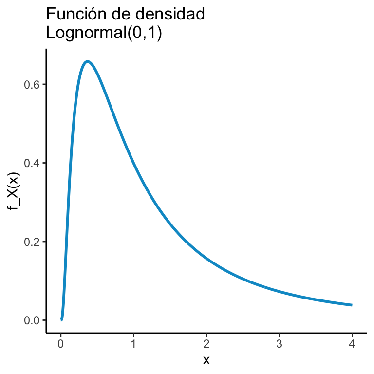
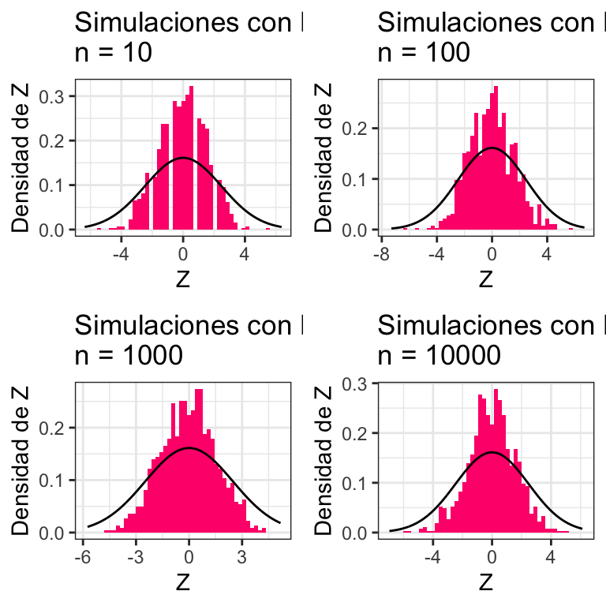
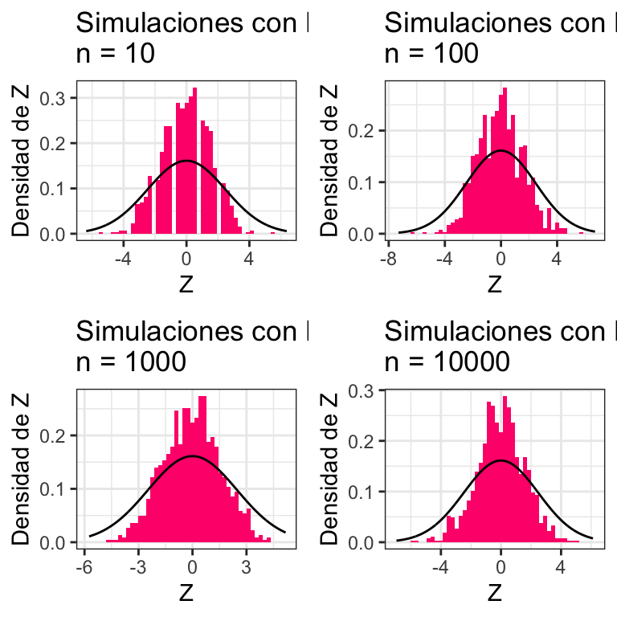

B Repaso de Proba
B.1 Funciones indicadoras
Dado un conjunto \(A\) definimos la función indicadora de \(A\) como sigue: \[ \mathbb{I}_A (x)= \begin{cases} 1 & \text{ si } x \in A \\ 0 & \text{ si } x \not\in A \end{cases} \]
La función indicadora cumple las siguientes propiedades:
Sean \(A,B\) conjuntos; luego:
\(\mathbb{I}_{A \cap B}(x) = \mathbb{I}_{A}(x) \cdot \mathbb{I}_{B}(x)\)
\(\mathbb{I}_{A \cup B}(x) = \mathbb{I}_{A}(x) + \mathbb{I}_{B}(x) - \mathbb{I}_{A}(x) \cdot \mathbb{I}_{B}(x)\)
\(\mathbb{E}_X[\mathbb{I}_A(X)] = \mathbb{P}(X\in A)\)
Demostración: 1. Si \(x\in A \cap B\) pasa que \(\mathbb{I}_{A \cap B}(x) = 1\); además, por hipótesis \(x\in A\) y \(x \in B\) lo que implica que \(\mathbb{I}_{A}(x) = 1\) y \(\mathbb{I}_{B}(x) = 1\); en caso contrario \(\mathbb{I}_{A \cap B}(x) = 1\) y como no está en el conjunto al menos uno \(\mathbb{I}_{A}(x)\) ó \(\mathbb{I}_{B}(x)\) es cero. Esto concluye la prueba. 2. Demostración es similar 3. Para cualquier variable aleatoria \(X\), \(\mathbb{I}_{A}(X)\) sólo toma dos valores: \(0\) si \(X\not\in A\) y \(1\) si \(X\in A\). Luego:
\[ \mathbb{E}_X[\mathbb{I}_A(X)] = 1 \cdot \mathbb{P}(X\in A) + 0 \cdot \mathbb{P}(X\not\in A) = \mathbb{P}(X\in A) \]
B.2 Conteo
Intentemos resumir todas las formas de contar que tenemos con un ejemplo de Casella and Berger (2002).
En la lotería de Nueva York se eligen \(6\) de \(44\) números para un ticket. ¿Cuántos boletos de lotería posibles hay?
Veamos algunas formas posibles de solución18:
Ordenado y sin reemplazo Si sólo importa el orden y una vez que sale un número no se vuelve a meter a los posibles entonces tenemos: \[ \frac{44!}{(44-6)!} \]
Ordenado y con reemplazo En cada uno de los \(6\) lugares hay \(44\) números posibles: \[ 44^6 \]
Sin orden y sin reemplazo Esto es una combinación por lo que la forma de extraerlo es: \[ \binom{44}{6} \]
Sin orden y con reemplazo Para resolver este caso podemos usar la técnica de las barras y los puntos. Coloquemos barras y los huecos entre ellas representan cada uno de los \(44\) números. \[\begin{equation}\nonumber |\underbrace{\_}_{1}|\underbrace{\_}_{2}|\underbrace{\_}_{3}|\cdots |\underbrace{\_}_{n}| \end{equation}\] Coloquemos puntos (\(\circ\)) donde estén los números seleccionados. Por ejemplo la siguiente representa la combinación \(113555\) \[\begin{equation}\nonumber |\underbrace{\circ \circ}_{1}|\underbrace{\_}_{2}|\underbrace{\circ}_{3}||\underbrace{\_}_{4}|\underbrace{\circ \circ \circ}_{5}|\cdots |\underbrace{\_}_{n}| \end{equation}\] Tenemos entonces que el problema se reduce a colocar \(n - 1= 43\) barritas (son un total de \(45\) pero la primera y la última no deben cambiar de lugar) y \(k = 6\) círculos por tanto colocamos \(49\) elementos en total. De estos, nos interesa poner \(6\) por lo que tenemos: \[ \binom{44 + 6 - 1}{6} \] formas distintas. Esto nos lleva a la tabla siguiente:
Para obtener una muestra de tamaño \(k\) a partir de un conjunto de tamaño \(n > 0\) éstas son las opciones:
| \(\quad \text{Con Reemplazo}\) | \(\quad \text{Sin Reemplazo}\) | |||
| \(\quad \text{Con Orden}\) | \(\quad n^k\) | \(\quad (n)_k\) | ||
| \(\quad \text{Sin Orden}\) | \(\quad \binom{n+k-1}{k}\) | \(\quad \binom{n}{k}\) |
B.3 Espacios de probabilidad
Los ingredientes para un modelo probabilístico son \(3\):
Un conjunto \(\Omega\) conocido como espacio muestral el cual es el conjunto de los resultados de interés. Por ejemplo, en el tiro de un dado \(\Omega = \{1,2,3,4,5,6\}\), para el lanzamiento de una moneda \(\Omega = \{\text{Águila},\text{Sol}\}\) o bien en seleccionar un número uniforme entre \(0\) y \(1\) tenemos que \(\Omega = [0,1]\).
Una colección \(\mathcal{F}\) de subconjuntos de \(\Omega\) conocida como sigma-álgebra o bien como espacio de eventos la cual cumple las siguientes características:
- \(\Omega \in \mathcal{F}\)
- Si \(A\in\mathcal{F}\) entonces \(A^C \in \mathcal{F}\)
- Si \(A_1, A_2, \dots\) es una colección finita ó numerable de elementos de \(\mathcal{F}\) entonces \(\bigcup_{n} A_n \in \mathcal{F}\)
Generalmente identificamos a la \(\mathcal{F}\) con el potencia para conjuntos \(\Omega\) finitos; para casos infinitos el teorema de Vitali nos dice que las cosas son más complicadas.
- Una función \(\mathbb{P}:\mathcal{F} \to [0,1]\) que cumple que:
- \(\mathbb{P}(\Omega) = 1\).
- \(\mathbb{P}(A) \geq 0\) para todo \(A \in \mathcal{F}\).
- Si \(A_1, A_2, \dots\) es una colección finita ó numerable de conjuntos disjuntos (\(A_i\cap A_j = \emptyset\) para \(i \neq j\)) entonces \(\mathbb{P}(\bigcup_{n} A_n) = \sum\limits_{n}\mathbb{P}(A_n)\).
Estos últimos tres puntos se conocen como Axiomas de Kolmogorov. Una vez armados con los axiomas podíamos empezar a probar cosas con ellos; por ejemplo:
Sea \((\Omega,\mathcal{F},\mathbb{P})\) un espacio de probabilidad. Sea \(A\) evento de \(\mathcal{F}\). Luego: \[ \mathbb{P}(A^C) = 1 - \mathbb{P}(A). \]
Para verlo, podemos escribir \(\Omega = A\cup A^C\) de donde se sigue que: \[ 1 = \mathbb{P}(\Omega) = \mathbb{P}(A \cup A^C) = \mathbb{P}(A) + \mathbb{P}(A^C); \] si despejamos obtenemos el resultado deseado.
También podemos probar, por ejemplo: \[ \mathbb{P}(A\setminus B) = \mathbb{P}(A) - \mathbb{P}(A \cap B) \]
si escribimos \(A = (A\setminus B) \cup (A \cap B)\) de donde se sigue que: \[ \mathbb{P}(A) = \mathbb{P}\big((A\setminus B) \cup (A \cap B) \big) = \mathbb{P}(A\setminus B) + \mathbb{P} (A \cap B) \] y despejamos para tener el resultado deseado.
Una última cosa de importancia es tomar \(A,B\) eventos de \(\mathcal{F}\). Luego: \[ \mathbb{P}(A \cup B) = \mathbb{P}(A) + \mathbb{P}(B) - \mathbb{P}(A \cap B) \]
Para verlo, escribimos \(A\cup B\) como \(A\cup B = (A\setminus B)\cup (A \cap B)\cup (B\setminus A)\) luego: \[\begin{equation}\nonumber \begin{aligned} \mathbb{P}(A\cup B) & = \mathbb{P}(A\setminus B) + \mathbb{P} (A \cap B) + \mathbb{P}(B\setminus A) \\ & = \mathbb{P}(A) - \mathbb{P}(A \cap B) + \mathbb{P} (A \cap B) + \mathbb{P}(B) - \mathbb{P}(A \cap B) \\ & = \mathbb{P}(A) + \mathbb{P}(B) - \mathbb{P}(A \cap B) \end{aligned} \end{equation}\]
B.4 Probabilidad condicional
Muchas veces la probabilidad cambia conforme obtenemos información extra. Por ejemplo, si consideramos los tiros de un dado \(\Omega = \{1,2,3,4,5,6\}\) y se sabe que cayó par \(B = \{2,4,6 \}\), la probabilidad de obtener \(2\) ó \(4\) (el evento) \(A = \{ 2, 4\}\) cambia de probabilidad: \[ \mathbb{P}(A | B) = \dfrac{\mathbb{P}(A \cap B)}{\mathbb{P}(B)} \]
En particular hay dos teoremas principales con probabilidad condicional: la ley de probabilidad total que te permite reconstruirlas probabilidades originales a partir de las condicionales y el de Bayes.
El teorema de Bayes puede deducirse a partir de un simple despeje pues notamos que: \[ \mathbb{P}(A | B) = \dfrac{\mathbb{P}(A \cap B)}{\mathbb{P}(B)} \] y por otro lado: \[ \mathbb{P}(B | A) = \dfrac{\mathbb{P}(A \cap B)}{\mathbb{P}(A)} \] Si despejamos del segundo, obtenemos: \[ \mathbb{P}(B | A)\mathbb{P}(A) = \mathbb{P}(A \cap B) \] Podemos sustituir la definición de intersección en \(\mathbb{P}(A|B)\) y así obtener: \[ \mathbb{P}(A | B) = \dfrac{\mathbb{P}(B | A)\mathbb{P}(A)}{\mathbb{P}(B)} \]
Por otro lado, dada una partición \(B_1, B_2, \dots\) finita o numerable de \(\Omega\) podemos definir la probabilidad de \(A\) en términos de cada uno de los pedazos:
\[ \mathbb{P}(A) = \sum\limits_{k} \mathbb{P}(A | B_k) \cdot \mathbb{P}(B_k) \]
Esta identidad se sigue de que: \[ \mathbb{P}(A | B_k) = \dfrac{\mathbb{P}(A \cap B_k)}{\mathbb{P}(B_k)} \]
de donde podemos sustituir arriba y obtener: \[ \mathbb{P}(A) = \sum\limits_{k} \dfrac{\mathbb{P}(A \cap B_k)}{\mathbb{P}(B_k)} \cdot \mathbb{P}(B_k) = \sum\limits_{k} \mathbb{P}(A \cap B_k) = \mathbb{P}\big(A \cap (\bigcup_k B_k) \big) = \mathbb{P}\big(A \cap \Omega \big) \]
Tenemos entonces el teorema siguiente:
Sean $B_1, B_2, $ eventos que forman una partición de \(\Omega\); sea \(A\) un evento cualquiera; luego: \[ \mathbb{P}(A) = \sum\limits_{k} \mathbb{P}(A | B_k) \cdot \mathbb{P}(B_k) \]
Usando probabilidad condicional podemos resolver problemas como el siguiente:
Considera el conjunto \(C = \{1,2,\dots, n\}\) para \(n \geq 2\). Se extraen dos números \(a\) y \(b\) (primero el \(a\) y luego el \(b\)) con probabilidad uniforme sin reemplazo. Determina la probabilidad de que \(a > b\). Podemos utilizar probabilidad condicional para representar el evento: \[\begin{equation}\nonumber \begin{aligned} \mathbb{P}(a > b) & = \sum\limits_{k = 1}^{n} \mathbb{P}(a > b \quad | \quad a = k) \mathbb{P}(a = k) \end{aligned} \end{equation}\] Donde \(\mathbb{P}(a = k) = \frac{1}{n}\) para todos los \(k\) pues es uniforme (y es el primero en salir). Luego: \[\begin{equation}\nonumber \begin{aligned} \mathbb{P}(a > b) & = \sum\limits_{k = 1}^{n} \mathbb{P}(a > b \quad | \quad a = k) \mathbb{P}(a = k) \\ & = \dfrac{1}{n} \sum\limits_{k = 1}^{n} \mathbb{P}(a > b \quad | \quad a = k) \\ & = \dfrac{1}{n} \sum\limits_{k = 1}^{n} \mathbb{P}(k > b \quad | \quad a = k) \\ \end{aligned} \end{equation}\] Notamos que cuando \(k = 1\) no hay forma de que \(k > b\); cuando \(k = 2\) hay una única forma (que \(b\) valga \(1\)); cuando \(k = 3\) hay dos formas. En general para una \(k\) genérica hay \(k-1\) formas de seleccionar un \(b\) menor a \(k\) luego: \[\begin{equation}\nonumber \begin{aligned} \mathbb{P}(a > b) & = \dfrac{1}{n} \sum\limits_{k = 1}^{n} \dfrac{k-1}{n} \\ & = \dfrac{1}{n^2} \sum\limits_{k = 1}^{n} k-1 \\ & = \dfrac{1}{n^2} \sum\limits_{k = 0}^{n-1} k \\ & = \dfrac{1}{n^2} \dfrac{n(n-1)}{2} \\ & = \dfrac{n-1}{2n} \end{aligned} \end{equation}\]
B.5 Independencia
Dos eventos \(A,B\) son independientes si: \[ \mathbb{P}(A \cap B) = \mathbb{P}(A) \mathbb{P}(B) \]
Intuitivamente esto significa que saber \(A\) no me dice nada de \(B\) pues la independencia implica que: \[ \mathbb{P}(A | B) = \mathbb{P}(A) \]
B.6 Variables aleatorias y función de distribución (acumulada)
Para hablar de probabilidad uno de los ingredientes principales eran las variables aleatorias. Éstas son funciones (no son variables ni son aleatorias) de tal manera que su imagen inversa pertenece a la sigma-álgebra \(\mathcal{F}\):
Una función \(X: \Omega \to \mathbb{R}\) es una variable aleatoria si: \[ X^{-1}(A) = \{ \omega \in \Omega \quad : \quad X(\omega) \in A \} \in \mathcal{F} \] para todo \(A\subseteq\textrm{Dom}_X\)
En general la pregunta \(\mathbb{P}(X \in A)\) la traducíamos a una pregunta sobre conjuntos: \[ \mathbb{P}(X \in A) = \mathbb{P}\Big( \{ \omega \in \Omega \quad : \quad X(\omega) \in A \} \Big) \]
y esto nos permitía hablar de probabilidades. En particular, construíamos la función de distribución acumulada como sigue:
Definimos la función de distribución acumulada de una variable aleatoria \(X: \Omega \to \mathbb{R}\) como: \[ F_X(x) = \mathbb{P}(X \leq x) \] donde \(X\) es la variable aleatoria y \(x\in\mathbb{R}\) es un real.
La función de distribución acumulada cumplía varias propiedades:
- \(\lim_{x \to \infty} F_X(x) = 1\)
- \(\lim_{x \to -\infty} F_X(x) = 0\)
- \(F_X\) es no decreciente.
- \(F_X\) es continua por la derecha.
- \(F_X\) tiene límites por la izquierda.
Los puntos 4 y 5 se resumen diciendo que la función es càdlág.
Tener la acumulada nos permitía calcular probabilidades de intervalos; por ejemplo: \[ \mathbb{P}(a < X \leq b) = F_X(b) - F_X(a) \] o bien: \[ \mathbb{P}(X < x) = \lim_{z \to x^-} F(z) \]
Las funciones de distribución acumulada más comunes se veían como en la imagen:

Si una función de distribución acumulada \(F_X\) era continua entonces decíamos que la variable aleatoria asociada (\(X\)) es continua. En particular, la continuidad implica que: \[ \mathbb{P}(X = k) = 0 \qquad \forall k \]
B.7 Funciones de masa de probabilidad
Si una variable aleatoria \(X\) tomaba una cantidad finita o numerable de valores decíamos que \(X\) es una variable aleatoria discreta. Dentro de las variables aleatorias discretas teníamos varios modelos. Una cosa importante de las variables aleatorias es la función de masa de probabilidad que se define como:
Dada una variable aleatoria discreta \(X\) definimos la función de masa de probabilidad de \(X\) como la función \(p:\mathbb{R} \to \mathbb{R}\) tal que: \[ p(x) = \mathbb{P}(X = x) \] para todo \(x \in\mathbb{R}\).
Algunos modelos importantes son:
Sea \(A = \{ a_1, a_2, \dots, a_n \}\) un conjunto finito de \(n\) elementos. Una variable aleatoria \(X\) tiene una distribución uniforme discreta si: \[ \mathbb{P}\big( X = a_k \big) = \dfrac{1}{n} \cdot \mathbb{I}_{A}(a_k) \qquad \forall k \in \{ 1, 2, \dots, n \} \]

Un modelo particular salía de considerar el siguiente problema:
Tenemos una moneda que cae Águila con probabilidad \(p\) y Sol con probabilidad \((1-p)\) (con \(0 < p < 1\)). Nos interesa saber cuál es la probabilidad de tener \(k\) Águilas en \(n\) tiros. Solución A fin de resolver este problema notamos que necesitamos acomodar las \(k\) águilas en los \(n\) tiros para ello hay \(\binom{n}{k}\) formas de hacerlo; cada águila cae con probabilidad \(p\) y hay \(k\); como son independientes esto nos da \(p^k\); por otro lado hay \(n-k\) soles cada uno cayó con probabilidad \((1-p)\). Esta lógica da origen al modelo binomial:
Una variable aleatoria \(X\) tiene una distribución \(\text{Binomial}(n,p)\) si: \[ \mathbb{P}\big(X = k \big) = \binom{n}{k} p^k (1-p)^{n-k} \mathbb{I}_{\{0,1,2,\dots,n \}}(k) \]

Una pregunta distinta que nos pudimos hacer fue:
Tenemos una moneda que cae Águila con probabilidad \(p\) y Sol con probabilidad \((1-p)\) (con \(0 < p < 1\)). Arrojamos la moneda hasta obtener \(r\) Águilas y en ese momento nos detenemos. Determina la probabilidad de que se aviente la moneda \(k\) veces.
Para ello notamos que la última Águila está fija por lo que sólo debemos poner las \(r-1\) Águilas en los \(k-1\) lugares restantes, \(\binom{k-1}{r-1}\). Por otro lado, cada Águila tiene probabilidad \(p\) y como son \(k\) tiros independientes entonces tenemos \(p^r\); para los soles tenemos \((1-p)^{k-r}\). Esto nos genera el modelo Binomial Negativo:
Una variable aleatoria \(X\) tiene una distribución \(\text{Binomial Negativa}(r,p)\) si: \[ \mathbb{P}\big(X = k \big) = \binom{k-1}{r-1} p^r (1-p)^{k-r} \mathbb{I}_{\{r, r+1, r+2, \dots \}}(k) \]

Finalmente, otro modelo que pudimos hacer con monedas es un caso específico del Binomial Negativo . Aquí la pregunta es, se tira una moneda que tiene probabilidad \(p\) de salir Águila hasta que se obtiene el águila. Contamos cuántos tiros ocurrieron hasta que ocurriera el primer Águila y la pregunta de interés es la probabilidad de haber realizado específicamente \(k\) tiros. Para ello necesitamos tener \((k-1)\) tiros que fueran sol: \((1-p)^{k-1}\) y un tiro que saliera águila \(p\). Esto nos genera el modelo geométrico:
Una variable aleatoria \(X\) tiene una distribución \(\text{Geométrica}(p)\) si: \[ \mathbb{P}\big(X = k \big) = (1-p)^k p \cdot \mathbb{I}_{\mathbb{N}}(k). \]

Otro modelo de interés es el siguiente:
Se tiene una población de tamaño \(M\) donde \(N\) individuos pertenecen al partido político AZUL y \(M-N\) pertenecen al VERDE Se toma una submuestra de tamaño \(m\). Determina la probabilidad de que haya \(n\) individuos del partido político AZUL.
Para ello notamos que hay \(\binom{M}{m}\) muestras totales. Por otro lado, necesitamos extraer de los \(N\) azules a una submuestra de \(n\): \(\binom{N}{n}\); finalmente, de los \(M\) verdes necesitamos extraer una submuestra de \(m\), hay \(\binom{M-N}{m-n}\) formas de hacerlo. Concluimos entonces con el modelo hipergeométrico:
Una variable aleatoria \(X\) tiene una distribución \(\text{Hipergeométrica}(M,N,m)\) si: \[ \mathbb{P}\big(X = n \big) = \dfrac{\binom{M-N}{m-n} \binom{N}{n} }{\binom{M}{m}} \cdot \mathbb{I}_{\{0,1,\dots, \text{mín}\{m, N\} \}} (n) \]

El modelo Poisson va a ser bastante útil. Para estudiarlo, consideremos un modelo. Vamos a pensar en un servidor de computación (piensa en una página de Internet) que recibe solicitudes de entrar a la página de manera independiente y aleatoria en un intervalo de tiempo entre \(t = 0\) y \(t = 1\). Como primera aproximación podemos dividir el intervalo en \(n\) pedazos cada uno de longitud \(1/n\) y asumir que, a fuerza, sólo una conexión se puede realizar en cada uno de esos pedazos. Finalmente, asumamos que la probabilidad \(p\) de que se haga una conexión es proporcional a la longitud del intervalo y sea \(p = \lambda / n\). Con estas hipótesis, la probabilidad de tener \(k\) conexiones (\(k\) entero entre \(0\) y \(n\)) está dada por un modelo binomial: \[\begin{equation}\nonumber \begin{aligned} f_n(k) & = \binom{n}{k} \Big( \frac{\lambda}{n} \Big)^k \Big(1 - \frac{\lambda}{n} \Big)^k \ & = \frac{\lambda^k}{k!} \Big( 1 - \frac{\lambda}{n})^n \frac{n!}{n^k(n-k)!} \Big( 1 - \frac{\lambda}{n})^{-k} \end{aligned} \end{equation}\] de donde concluimos que si continuamos partiendo el intervalo en pedazos cada vez más pequeños obtenemos: \[\begin{equation}\nonumber \begin{aligned} \lim_{n \to \infty} f_n(k) & = \frac{e^{-\lambda} \lambda^k}{k!} \end{aligned} \end{equation}\] Esto resulta en el modelo Poisson:
Una variable aleatoria \(X\) tiene una distribución \(\text{Poisson}(\lambda)\) si: \[ \mathbb{P}\big(X = k \big) = \dfrac{\lambda^k e^{-\lambda}}{k!} \mathbb{I}_{\mathbb{N}\cup \{ 0 \}}(k) \]

B.8 Funciones de densidad
Por construcción, las variables aleatorias continuas no tienen una función de masa de probabilidad (recuerda que \(\mathbb{P}(X = k) = 0\) si \(X\) es continua para todo \(k\)). Sin embargo, es posible definir, si \(F_X\) es diferenciable algo similar, la función de densidad.
Para una variable aleatoria \(X\) con función de distribución acumulada \(F_X\) diferenciable, definimos la función de densidad como: \[ f_X(x) = \dfrac{d}{dx} F_X(x) \]
Notamos que una función de densidad no es una probabilidad y no necesariamente sigue las mismas reglas; lo único que se requiere es:
- \(f_X(x) \geq 0\) para toda \(x\).
- \(\int\limits_{-\infty}^{\infty} f_X(x) dx = 1\).
La primer función de densidad es la que a un intervalo \([a,b]\) (ya sea abierto, cerrado o como sea) asigna a cada subintervalo una probabilidad proporcional a su longitud. Éste es el modelo uniforme:
Una variable aleatoria \(X\) tiene una distribución \(\text{Uniforme}(a,b)\) si: \[ f_X(x) = \dfrac{1}{b-a}\mathbb{I}_{(a,b)}(x) \]

Una generalización del modelo uniforme es el beta (eventualmente veremos de dónde sale):
Una variable aleatoria \(X\) tiene una distribución \(\text{Beta}(\alpha,\beta)\) si: \[ f_X(x) = \dfrac{x^{\alpha - 1}(1-x)^{\beta - 1}}{B(\alpha, \beta)}\mathbb{I}_{(0,1)}(x) \] donde \[ B(\alpha, \beta) = \dfrac{\Gamma (\alpha) \Gamma (\beta)}{\Gamma (\alpha + \beta)} \]

Podemos deducir el modelo exponencial a partir de la descripción del Poisson. Volvamos al mismo problema del \(\textrm{Poisson}(\lambda)\) donde hay computadoras conectándose a un servidor. Sea \(W\) la variable aleatoria que denota el tiempo de espera hasta el primer evento. Analicemos su distribución acumulada; notamos que \[ F_W(w) = \mathbb{P}(W \leq w) = 1 - \mathbb{P}(W > w) \] Ahora, para que \(W > w\) eso significa que ningún evento tuvo que haber ocurrido en los primeros \(w\) minutos (horas, lo que sea la unidad de tiempo). Y ese evento es equivalente a que nuestra variable aleatoria Poisson (tasa \(\lambda w\))19 no tenga ningún arribo: \[ \mathbb{P}(X = 0) = \dfrac{(\lambda w)^0 e^{-\lambda w}}{0!} = e^{-\lambda} \] De donde se obtiene la función de distribución acumulada: \[ F_W(w) = 1 - e^{-\lambda w} \] De donde, al derivar respecto a \(w\), se obtiene el modelo exponencial:
Una variable aleatoria \(X\) tiene una distribución \(\text{Exponencial}(\lambda)\) si: \[ f_X(x) = \lambda e^{-\lambda x} \mathbb{I}_{(0,\infty)}(x) \]
Para deducir la distribución gamma, vamos a preguntarnos por exactamente el mismo proceso pero esta vez, en lugar de preguntarnos por el tiempo para la primer conexión nos preguntaremos por el tiempo para la \(\alpha\)-ésima conexión. Para ello, sea \(W_{\alpha}\) el tiempo hasta la \(\alpha\)-ésima conexión. Usamos el mismo truco del complemento que la vez pasada: \[ F_{W_{\alpha}}(w) = \mathbb{P}(W_{\alpha} \leq w) = 1 - \mathbb{P}(W_{\alpha} > w) \] Y notamos que para que \(W_{\alpha} > w\) entonces a lo más debieron haber \(\alpha-1\) conexiones. Podemos reescribir: \[ F_{W_{\alpha}}(w) = 1 - \mathbb{P}(W_{\alpha} > w) = 1 - \sum\limits_{k = 0}^{\alpha - 1} \dfrac{(\lambda w)^k e^{-\lambda w}}{k!} = 1 - e^{- \lambda w} - \sum\limits_{k = 1}^{\alpha - 1} \dfrac{(\lambda w)^k e^{-\lambda w}}{k!} \] Derivamos: \[\begin{equation}\nonumber \begin{aligned} \dfrac{d}{dw}F_{W_{\alpha}}(w) & = -\lambda e^{- \lambda w} - \sum\limits_{k = 1}^{\alpha - 1} \dfrac{k \lambda (\lambda w)^{k-1} e^{-\lambda w} - \lambda (\lambda w)^k e^{-\lambda w}}{k!} \ & = -\lambda e^{- \lambda w} - \lambda e^{- \lambda w} \sum\limits_{k = 1}^{\alpha - 1} \underbrace{\dfrac{(\lambda w)^{k-1}}{(k-1)!} - \dfrac{(\lambda w)^k }{k!}}_{\text{Telescópica}} \ & = -\lambda e^{- \lambda w} + \lambda e^{- \lambda w} \Bigg( \dfrac{(\lambda w)^{\alpha - 1} }{(\alpha - 1)!} - 1 \Bigg) \ & = \lambda e^{- \lambda w} \dfrac{(\lambda w)^{\alpha - 1} }{(\alpha - 1)!} \ & = \dfrac{\beta^{\alpha} }{\Gamma (\alpha)} w^{\alpha - 1} e^{- \frac{w}{\beta}} \ \end{aligned} \end{equation}\] donde tomamos \(\beta = \frac{1}{\lambda}\). Esto sugiere el modelo gamma:
Una variable aleatoria \(W\) tiene una distribución \(\text{Gamma}(\alpha,\beta)\) si: \[ f_W(w) = \dfrac{\beta^{\alpha} }{\Gamma (\alpha)} w^{\alpha - 1} e^{- \frac{w}{\beta}} \mathbb{I}_{(0,\infty)} \] para \(\alpha,\beta > 0\).
Para deducir el modelo normal consideremos lo siguiente. Pensemos que estamos midiendo la posición de las estrellas en el cielo. Para ello hay dos formas. Bajo coordenadas cartesianas \((x,y)\) pensemos que el error de medición es independiente; es decir, si \(f(x,y)\) es la densidad de los errores entonces:
\[ \rho (x,y) = f(x) f(y) \]
Por otro lado, asumamos que existe también una representación en coordenadas polares de la posición de la estrella: \[ g (r, \theta) = g(r) \] donde el error de medición depende sólo del radio (no del ángulo). Notamos entonces que: \[ f(x) f(y) = g\Big( \sqrt{x^2 + y^2} \Big) \] Si tomamos \(y = 0\) tenemos que \(f(x) f(0) = g(x)\) (asumo \(x > 0\); los otros casos son similares). Podemos entonces sustituir:
\[ \dfrac{f(x) f(y)}{f(0)^2} = \dfrac{f\Big( \sqrt{x^2 + y^2} \Big) }{f(0)} \]
Tomamos logaritmo: \[ \ln \dfrac{f(x)}{f(0)} + \ln \dfrac{f(y)}{f(0)} = \ln \dfrac{f\Big( \sqrt{x^2 + y^2} \Big) }{f(0)} \] Notamos que una solución es que: \[ \ln \dfrac{f(x)}{f(0)} = \alpha x^2 \] de donde despejamos y obtenemos: \[ f(x) = \frac{1}{f(0)} e^{\alpha x^2} \] Finalmente sabemos que debe integrar a \(1\) y por tanto esto fuerza a \(\alpha\) a ser negativo. En particular tomaremos \(\alpha = -\frac{1}{2}\) \[ f(x) = \frac{1}{f(0)} e^{-\frac{1}{2} x^2} \] Y para que integre a \(1\):s \[ f(x) = \frac{1}{\sqrt{2 \pi}} e^{-\frac{1}{2} x^2} \]
Por último, notamos que si \(Z\sim \textrm{Normal}(0,1)\) entonces \(X = \sigma Z + \mu\) tiene la densidad dada por20: \[ f(x) = \frac{1}{\sqrt{2 \pi \sigma^2}} e^{-\frac{1}{2\sigma^2} (x - \mu)^2} \]
Una variable aleatoria \(X\) tiene una distribución \(\text{Normal}(\mu,\sigma)\) si: \[ f_X(x) = \frac{1}{\sqrt{2 \pi \sigma^2}} e^{-\frac{(x - \mu)^2}{2 \sigma^2}} \]
B.9 Teorema de cambio de variable unidimensional
Supongamos que tenemos una variable aleatoria \(X\) y nos interesa ver cómo se ve la \(X\) después de aplicarle una función \(\phi\). Por ejemplo, si \(X\sim\textrm{Normal}(0,1)\) la función de densidad de \(e^X\) está dada por:
\[ f_X(x) = \dfrac{1}{x \sqrt{2 \pi \sigma^2}}e^{-(\ln(x) - \mu)^2/2\sigma^2} \mathbb{I}_{(0,\infty)}(x). \]
Lo cual cambia mucho la forma de la distribución:

La pregunta es, cómo obtener la función de densidad de \(X\) si se conoce la función \(\phi\); el teorema de cambio de variable nos da una respuesta cuando \(\phi\) es monótona estrictamente creciente o bien estrictamente decreciente y diferenciable.
Sea \(X\) una variable aleatoria continua y \(\phi\) una función estrictamente creciente ó estrictamente decreciente y diferenciable. Entonces: \[ f_{\phi(X)}(t) = f_X( \phi^{-1}(t) ) \cdot \left| \dfrac{d}{dt} \phi^{-1}(t) \right| \]
DEM: Caso estrictamente decreciente Como \(\phi\) es estrictamente decreciente es invertible y por tanto: \[\begin{equation}\nonumber \begin{aligned} F_{\phi(X)}(t) & = \mathbb{P}(\phi(X) \leq t) \\ & = \mathbb{P}(X \geq \phi^{-1}(t) ) \\ & = 1 - \mathbb{P}(X \leq \phi^{-1}(t) ) \\ & = 1 - F_X( \phi^{-1}(t) ) \end{aligned} \end{equation}\] luego derivamos respecto a \(t\): \[\begin{equation}\nonumber \begin{aligned} f_{\phi(X)}(t) & = \dfrac{d}{dt} F_{\phi(X)}(t) \\ & = - \dfrac{d}{dt} F_X( \phi^{-1}(t) ) \\ & = - f_X( \phi^{-1}(t) ) \cdot \dfrac{d}{dt} \phi^{-1}(t) \\ & = f_X( \phi^{-1}(t) ) \cdot \left| \dfrac{d}{dt} \phi^{-1}(t) \right| \end{aligned} \end{equation}\] Donde el valor absoluto sale de que \(\phi^{-1}(t) < 0\) por ser estrictamente decreciente la \(\phi\).
B.10 Probabilidad Multivariada
De la misma manera que hablamos de una sola variable aleatoria podemos hablar de muchas como múltiples funciones de \(\Omega \in \mathbb{R}\). Para una colección finita \(\{ X_i \}_{i = 1}^n\) de variables aleatorias podemos hablar de su función de distribución acumulada conjunta como: \[ F_{\vec{X}}(x_1, x_2, \dots, x_n) = \mathbb{P}\big( X_1 \leq x_1, X_2 \leq x_2, \dots, X_n \leq x_n) \] donde suponemos que \(\vec{X} = (X_1, X_2, \dots, X_n)^T\) es un vector aleatorio cuyas entradas son las variables de la colección anterior. En el caso de que las \(n\) variables sean discretas la función de masa conjunta está dada por: \[ p_{\vec{X}}(x_1, x_2, \dots, x_n) = \mathbb{P}(X_1 = x_1, X_2 = x_2, \dots, X_n = x_n) \] En el caso de que sean continuas (\(F_{\vec{X}}\) diferenciable en sus \(n\) entradas) entonces la densidad está dada por: \[ f_{\vec{X}}(x_1, x_2, \dots, x_n) = \dfrac{\partial^n}{\partial x_1 \partial x_2 \dots \partial x_n}F_{\vec{X}}\Bigg|_{(x_1, x_2, \dots, x_n)} \] En general la función de probabilidad conjunta siempre va a esta dada por: \[ \mathbb{P}(X_1 \in A_1, X_2 \in A_2, \dots, X_n \in A_n) = \mathbb{P}\Big(\{ \omega \in \Omega : X_1(\omega) \in A_1 \text{ y } X_2(\omega) \in A_2 \text{ y } \dots \text{ y } X_n(\omega) \in A_n \}\Big) \]
para \(A_1, A_2, \dots, A_n\) medibles (bajo \(X_1, X_2, \dots, X_n\) respectivamente).
Dos variables aleatorias \(X_i\) y \(X_j\) (\(i \neq j\)) son independientes si: \[ \mathbb{P}(X_i \in A, X_i \in B) = \mathbb{P}(X_i \in A) \cdot \mathbb{P}(X_j \in B) \] para \(A,B\) medibles. Una colección \(\{ X_i \}_{i}\) de variables aleatorias es completamente independiente si para cualquier subcolección finita \(\{ X_{i_k} \}_{i_k}\) se tiene que: \[ \mathbb{P}(X_{i_1} \in A_{i_1}, X_{i_2} \in A_{i_2}, \dots, X_{i_n} \in A_{i_n} ) = \prod_{k = 1}^n \mathbb{P}(X_{i_k} \in A) \] en el contexto de estas notas, a menos que se indique lo contrario, las variables aleatorias que utilicemos serán completamente independientes.
Un aspecto interesante de la independencia es que permite partir las funciones de masa, densidad y distribución acumulada en dos funciones independientes. Así, si \(X,Y\) son independientes con masa conjunta \(p\): \[ p_{X,Y}(x,y) = \mathbb{P}(X = x, Y = y) = \mathbb{P}(X = x)\cdot\mathbb{P}(Y = y) = p_X(x)\cdot p_Y(y) \] El resultado se mantiene para distribuciones: \[ F_{X,Y}(x,y) = \mathbb{P}(X \leq x, Y \leq y) = \mathbb{P}(X \leq x)\cdot\mathbb{P}(Y \leq y) = F_X(x)\cdot F_Y(y) \] y si derivamos (en caso de \(F\) diferenciable), se mantiene para densidades:
\[ f_{X,Y}(x,y) = \dfrac{\partial^2}{\partial x\partial y} F_{X,Y}\Big|_{(x,y)} = \dfrac{\partial^2}{\partial x\partial y} F_X(x)\cdot F_Y(y)\Big|_{(x,y)} = f_X(x) f_Y(y) \]
B.11 Esperanza, varianza y covarianza
Para una función medible \(g\) de una variable aleatoria \(X\) definimos su valor esperado (si existe) como: \[ \mathbb{E}\big[g(X)\big] = \begin{cases} \sum\limits_{x \in \text{Supp}(X)} g(x) \cdot \mathbb{P}(X = x) & \text{ si } X \text{ discreta.} \\ \int\limits_{-\infty}^{\infty} g(x) \cdot f_X(x) dx& \text{ si } X \text{ continua} \end{cases} \] donde \(f_X\) es la densidad de \(X\) en el caso continuo y \(\text{Supp}(X)\) es el conjunto imagen de \(X\) (el soporte): \[ \text{Supp}(X) = \{ x : X(\omega) = x \text{ para } \omega \in \Omega \} \] En el caso de conjuntos finitos de variables aleatorias la definción es similar:
Para una función \(g:\mathbb{R}^n \to \mathbb{R}\) multivariada de \(n\) variables aleatorias (sobre los reales) \(X_1, X_2, \dots, X_n\) definimos su valor esperado (si existe y sin pérdida de generalidad suponiendo las primeras \(j\) son discretas y las últimas \(n - (j + 1)\) continuas) como: \[\begin{equation}\nonumber \begin{aligned} \mathbb{E}\big[ g(X_1, X_2, \dots, X_n) \big] = \\ & \int_{-\infty}^{\infty} \dots \int_{-\infty}^{\infty} \sum_{x_j \in \text{Supp}(X_j)} \dots \sum_{x_1 \in \text{Supp}(X_1)} g(x_1, x_2, \dots, x_n) p(x_1) \dots p(x_j) f_{X_{j+1}}(x_{j+1}) \dots f_{X_{n}}(x_{n}) dx_{j+1} \dots dx_{n} \end{aligned} \end{equation}\]
donde \(p(x_j)\) es la masa de \(X_j\) (es decir \(p(x_j) = \mathbb{P}(X_j = x_j)\). En el caso particular de dos variables aleatorias \(X_1\) y \(X_2\) podemos escribir la expresión de manera más sencilla:
\[\begin{equation}\nonumber \begin{aligned} \mathbb{E}\big[ & g(X_1, X_2) \big] = \begin{cases} \int\limits_{-\infty}^{\infty} \int_{-\infty}^{\infty} g(x_1, x_2) f_{X_1}(x_1) f_{X_2}(x_2) dx_1 dx_2 & \text{ ambas continuas,} \\ \\ \sum\limits_{x \in \text{Supp}(X_1)} \sum\limits_{x \in \text{Supp}(X_2)} g(x_1, x_2) p(x_1) p(x_2) & \text{ ambas discretas,} \\ \\ \int_{-\infty}^{\infty} \sum\limits_{x \in \text{Supp}(X_1)} g(x_1, x_2) p(x_1) p(x_2) & X_1 \text{ discreta, } X_2 \text{ continua.} \\ \end{cases} \end{aligned} \end{equation}\]
En particular, en el espacio de las variables aleatorias definimos un producto interno, la covarianza la cual está dada por: \[ \textrm{Cov}(X_1, X_2) = \mathbb{E}\Big[ \big(X_1 - \mathbb{E}[X_1]\big) \cdot \big(X_2 - \mathbb{E}[X_2]\big) \Big] \] La varianza es un caso particular de la covarianza: cuando \(X_1 = X_2\):
\[ \textrm{Cov}(X_1, X_1) = \mathbb{E}\Big[ \big(X_1 - \mathbb{E}[X_1]\big)^2 \Big] \]
B.11.1 Propiedades de valor esperado, varianza y covarianza
El valor esperado al ser representable mediante sumas ó integrales cumple todas las propiedades de las sumas (resp integrales) en particular la linealidad: \[ \mathbb{E}\Big[ a X + Y\Big] = a \mathbb{E}[X] + \mathbb{E}[Y] \] La demostración se hace exactamente igual en el caso de variables discretas, continuas (ó mezcla de una y una). Aquí muestro la de continuas con densidades \(f_X\) y \(f_Y\):
\[\begin{equation} \begin{aligned} \mathbb{E}\Big[ a X + Y\Big] & = \int\limits_{-\infty}^{\infty} \int\limits_{-\infty}^{\infty} (a x + y) f_{X,Y}(x,y) dx dy \\ & = a \int\limits_{-\infty}^{\infty} \int\limits_{-\infty}^{\infty} x f_{X,Y}(x,y) dx dy + \int\limits_{-\infty}^{\infty} \int\limits_{-\infty}^{\infty} y f_{X,Y}(x,y) dx dy \\ & = a \Big[ \int\limits_{-\infty}^{\infty} x f_X(x) dx \Big] + \int\limits_{-\infty}^{\infty} y f_Y(y) dy \\ & = a \mathbb{E}[X] + \mathbb{E}[Y] \end{aligned} \end{equation}\]
Otro resultado importante es que si dos variables aleatorias \(X,Y\) son independientes entonces el valor esperado del producto se parte: \[ \mathbb{E}[XY] = \mathbb{E}[X] \cdot \mathbb{E}[Y] \] La demostración se hace de manera idéntica en todos los casos. Aquí mostramos el caso de \(X,Y\) discretas:
\[\begin{equation} \begin{aligned} \mathbb{E}\Big[XY\Big] & = \sum\limits_{y \in \text{Sup}(Y)} \sum\limits_{x \in \text{Sup}(X)} xy \mathbb{P}(X = x, Y = y) \\ & = \sum\limits_{y \in \text{Sup}(Y)} \sum\limits_{x \in \text{Sup}(X)} xy \mathbb{P}(X = x) \mathbb{P}(Y = y) \\ & = \Big[\sum\limits_{y \in \text{Sup}(Y)} y \mathbb{P}(Y = y)\Big] \Big[\sum\limits_{x \in \text{Sup}(X)} x \mathbb{P}(X = x)\Big] \\ & = \mathbb{E}[X] \cdot \mathbb{E}[Y] \end{aligned} \end{equation}\]
La linealidad nos permite reescribir la covarianza: \[\begin{equation} \begin{aligned} \textrm{Cov}(X_1, X_2) & = \mathbb{E}\Big[ \big(X_1 - \mathbb{E}[X_1]\big) \cdot \big(X_2 - \mathbb{E}[X_2]\big) \Big] \\ & = \mathbb{E}\Big[ X_1 X_2 \Big] - \mathbb{E}\Big[X_1\Big]\mathbb{E}\Big[X_2\Big] - \mathbb{E}\Big[X_1\Big]\mathbb{E}\Big[X_2\Big] + \mathbb{E}\Big[X_1\Big]\mathbb{E}\Big[X_2\Big] \\ & = \mathbb{E}\Big[ X_1 X_2 \Big] - \mathbb{E}\Big[X_1\Big]\mathbb{E}\Big[X_2\Big] \end{aligned} \end{equation}\]
de tal forma que es claro que si \(X_1\) y \(X_2\) son independientes entonces \(\textrm{Cov}(X_1, X_2) = 0\) por la propiedad anterior del valor esperado. OJO De manera general covarianza \(0\) no implica que las variables sean independientes como puede verse con las variables aleatorias siguientes: \[ f_{X,Y}(x,y) = \begin{cases} 1/8 & \text{ si } (x,y) \in \{ (-1,-1), (-1,1), (1, -1), (1,1)\} \\ 1/2 & \text{ si } (x,y) = (0,0), \\ 0 & \text{ en otro caso} \end{cases} \] las cuales no son independientes pues \(\mathbb{P}(X = 0, Y = 0) = 1/2\neq 1/4 = \mathbb{P}(X = 0)\cdot \mathbb{P}(Y = 0)\); sin embargo (ejercicio sugerido) la covarianza es \(0\).
Una segunda propiedad de interés de la covarianza es que actúa como el producto interno (de hecho es uno): \[ \text{Cov}(a X + bY, cW + dV) = ac \text{Cov}(X,W) + ad \text{Cov}(X,V) + bc \text{Cov}(Y,W) + bd \text{Cov}(Y,V) \] la cual se demuestra igual mediante la linealidad: \[\begin{equation} \begin{aligned} \textrm{Cov}(a & X + bY, cW + dV) = \mathbb{E}\Big[ (a X + bY) (cW + dV) \Big] - \mathbb{E}\Big[a X + bY\Big]\mathbb{E}\Big[cW + dV\Big] \\ & = \mathbb{E}\Big[ ac XW + bc YW + ad XV + bd YV\Big] - \bigg( a \mathbb{E}\Big[ X \Big] + b\mathbb{E}\Big[ Y\Big]\bigg)\bigg( c\mathbb{E}\Big[W\Big] + d\mathbb{E}\Big[V\Big] \bigg) \\ & = ac \text{Cov}(X,W) + ad \text{Cov}(X,V) + bc \text{Cov}(Y,W) + bd \text{Cov}(Y,V) \end{aligned} \end{equation}\] donde la última igualdad se sigue de agrupar los términos idénticos tras sus constantes.
B.12 Condicionamiento por otra variable aleatoria
A rellenarse pronto
B.13 Funciones características
A rellenarse pronto
B.14 Convergencias
A rellenarse pronto
B.14.1 Teorema de continuidad de Lévy
A rellenarse pronto
B.15 Ley de los grandes números
A rellenarse pronto
B.16 Teorema del límite central
A rellenarse pronto
B.16.1 Programación en R del teorema del límite central con variables aleatorias independientes idénticamente distribuidas
Lo que programaremos (por facilidad) en esta sección corresponde a ejemplos del teorema de proba 2: dadas variables aleatorias independientes idénticamente \(\{X_i\}\) distribuidas con media \(\mu\) y varianza finita \(\sigma^2\) tenemos que:
\[ Z =\lim_{n \to \infty} \sqrt{\dfrac{n}{\sigma^2}} \cdot \Big( \frac{1}{n}\sum_{i = 1}^n X_i - \mu\Big) \sim \textrm{Normal}(0,1) \] donde el símbolo \(\sim\) se lee “se distribuye”. En este caso la interpretación va a ser que para \(n\) muy grande tendremos que \[ \sqrt{\dfrac{n}{\sigma^2}} \cdot \Big( \frac{1}{n}\sum_{i = 1}^n X_i - \mu\Big) \mathrel{\dot\sim} \textrm{Normal}(0,1) \]
donde \(\mathrel{\dot\sim}\) se lee como “se distribuye aproximadamente”. Programaremos una función en R que para \(n\) grande muestre eso:
donde podemos ver la aproximación normal si tomamos, por ejemplo, las \(X_i\) siguen una distribución Gamma:
 La binomial se ve así:

La binomial se ve así:

Poisson:

E inclusive uniformes:

Experimenta con otras distribuciones ¿puedes encontrar alguna para la que no funcione?
B.16.2 Ejercicio
Repite la programación del teorema del límite central pero ahora tomando las \(X_k\) con distintas distribuciones siempre y cuando \(X_k\) tenga media \(\mu_k\) finita y las variables aleatorias satisfagan la condición de Lindberg (una forma de hacerlo es teniendo varianzas finitas que no incrementan con la \(k\)).
Casella, George, and Roger L Berger. 2002. Statistical Inference. Vol. 2. Duxbury Pacific Grove, CA.
Gelman, Andrew, John B Carlin, Hal S Stern, David B Dunson, Aki Vehtari, and Donald B Rubin. 2013. Bayesian Data Analysis. CRC press.
Hyndman, Rob J, and Yanan Fan. 1996. “Sample Quantiles in Statistical Packages.” The American Statistician 50 (4): 361–65.
Myatt, Glenn J, and Wayne P Johnson. 2007. Making Sense of Data. Wiley Online Library.
Panaretos, Victor M. 2016. “Statistics for Mathematicians.” Compact Textbook in Mathematics. Birkhäuser/Springer 142: 9–15.
Peck, Roxy, Chris Olsen, and Jay L Devore. 2015. Introduction to Statistics and Data Analysis. Cengage Learning.
Pewsey, Arthur, Markus Neuhäuser, and Graeme D Ruxton. 2013. Circular Statistics in R. Oxford University Press.
Särndal, Carl-Erik, Bengt Swensson, and Jan Wretman. 2003. Model Assisted Survey Sampling. Springer Science & Business Media.
SURI, NNR MURTY RANGA, M Narasimha Murty, and G Athithan. 2019. Outlier Detection: Techniques and Applications. Springer.
Wolfe, Douglas A, and Grant Schneider. 2017. Intuitive Introductory Statistics. Springer.
References
Casella, George, and Roger L Berger. 2002. Statistical Inference. Vol. 2. Duxbury Pacific Grove, CA.